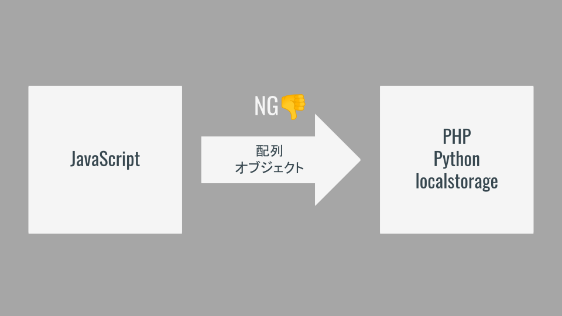
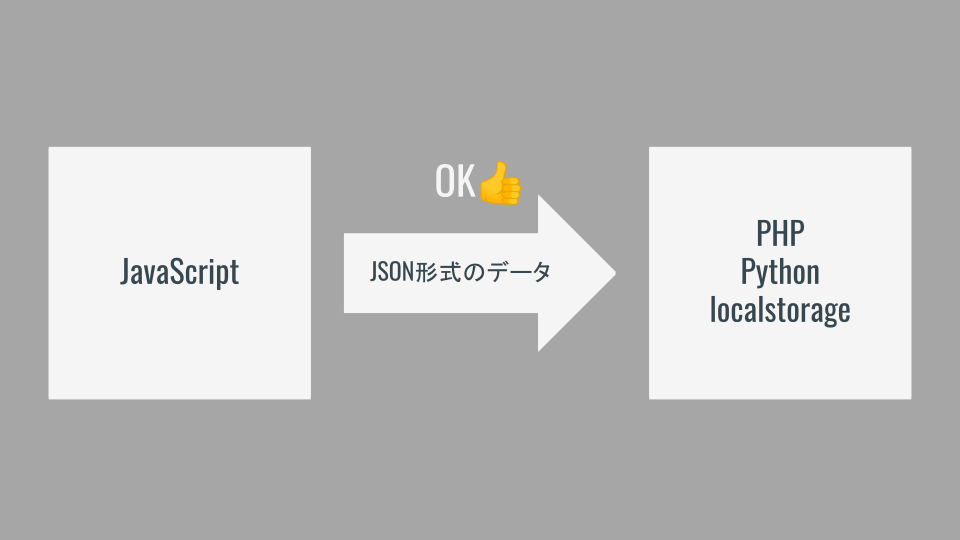

JSONデータ（メモ帳中級）
メモ帳初級の問題点
データが1件しか保存できない．複数のメモを個別に残しておきたいときに困る．
複数件のデータを管理する
配列かオブジェクトを使えば複数件のデータをまとめることができる．これを用いればメモ欄が複数になっても管理できそうである．
だめです
配列やオブジェクトは言語毎に形式が異なるため互換性がない（JavaScriptの配列はJavaScriptでしか扱えない）．
つまり，LocalStorageも配列やオブジェクトを保存することはできない．

互換性のあるデータであるJSON形式
Webアプリケーションは複数の言語で構成されていることが多い．このような場合にお互いのデータをやり取りするため，互換性のある「JSON形式」が準備されている．
各言語では「自前の配列やオブジェクト」と「JSON形式のデータ」を相互に変換する処理が準備されている．

メモ帳中級編のイメージ
タイトルと本文をまとめて保存できるようにする！

JSONの扱い方
JavaScriptには（他の言語でも）「配列やオブジェクトをJSONに変換する処理」と「JSONを配列やオブジェクトに戻す処理」が用意されている．
配列やオブジェクトをJSONに変換する処理
JSON.stringify()でJSON形式に変換できる．
const data = {
title: '波紋の使い方',
text: 'メメタァ'
};
const jsonData = JSON.stringify(data);
localStorage.setItem('memo', jsonData);
JSONを配列やオブジェクトに戻す処理
JSON.parse()でJSON形式から戻すことができる．
const jsonData = localStorage.getItem('memo');
const data = JSON.parse(jsonData);
console.log(data)
練習
タイトルと本文の両方を保存できるメモ帳を実装しよう．
- 動き方はメモ帳初級編と同様
- saveボタンクリック時に
- タイトルと本文の値を取得してまとめる．
- まとめたデータをJSON形式に変換する．
- JSON形式のデータをLocalStorageに保存．
- clearボタンクリック時にデータを消去
- 読み込み時に
- LocalStorageからJSON形式のデータを取得する．
- JSON形式のデータをオブジェクトに戻す．
- オブジェクトからデータを取り出して画面に表示する．